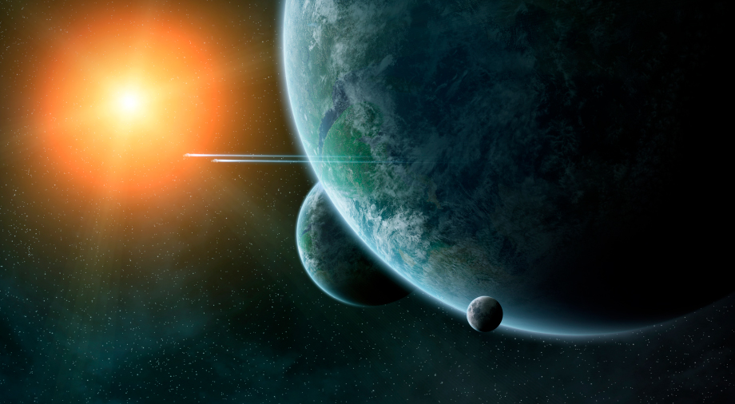
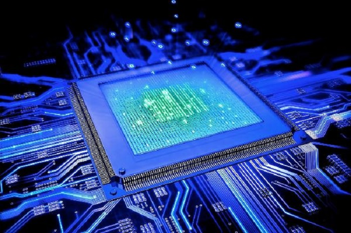

5 найбільш фантастичних відкриттів у науці та технологіях
В історії людства завжди існував потяг до розумового росту та наукових відкриттів. З плином часу люди пройшли довгий шлях від винаходів, що змінювали їхні повсякденні життя, до відкриттів, які перевернули світ у всій своїй величі. Сьогодні ми розглянемо 10 найбільш фантастичних наукових та технологічних досягнень, які захоплюють світ.
-
Штучний інтелект
Розвиток ШІ став можливим завдяки великим обчислювальним ресурсам та глибокому навчанню. Він застосовується в медицині, фінансах, транспорті та багатьох інших сферах, забезпечуючи точність та швидкість обробки інформації.
Дізнатися більше -
Екзопланети
Астрономи відкрили тисячі планет поза нашою Сонячною системою, декілька з яких мають потенціал для життя. Це відкриття розширило наше розуміння космосу та можливостей існування інших форм життя.
 Дізнатися більше -
Геномна редагування
Технології дозволяють редагувати гени з великою точністю. Це відкриття має потенціал в лікуванні генетичних захворювань та зміні характеристик організму.
Дізнатися більше -
Квантова обчислювальна технологія
Розробка квантових комп'ютерів відкриває нову еру обчислень, здатних розв'язувати задачі, які для класичних комп'ютерів залишаються неприступними.
 Дізнатися більше -
Нанотехнологія
За допомогою наноматеріалів можливо створювати продукти з найвищою міцністю та проводячістю, а також використовувати їх для медичних цілей, таких як поставка ліків.
Дізнатися більше